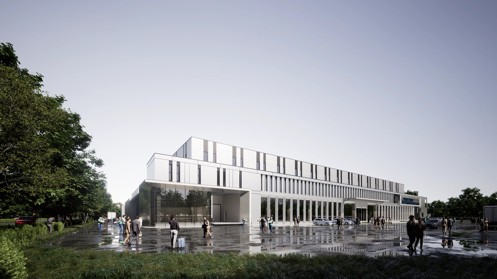

SHANGFA INDUSTRIAL PARK
上发新能源汽车零部件产业园
把工业的秩序，留在建筑的立面上
安徽 · 庐江
工业建筑 · 厂房 / 2024.11

- 地点
- 安徽 · 庐江
- 年份
- 2024.11
- 类型
- 工业建筑 · 厂房
- 阶段
- 专家会方案
- 参与
- 建筑方案与汇报表达 · 团队协作
- 设计团队
- 深圳市建筑设计研究总院有限公司合肥分院
PROJECT / 项目
以生产厂房为主体，在规整的基地中组织建筑、道路与出入口。通过连续的立面节奏、清楚的入口和克制的材料表达，建立面向园区的建筑形象。
01 / DESIGN生产优先
以集中清晰的厂房布局回应生产空间需求，协调建筑与周边道路关系。
02 / DESIGN形成可识别入口
以立面开口与入口空间的变化，在连续的建筑界面中建立到达节点。